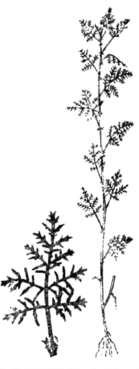

Полынь (artemisia)
")
Среди многих сотен видов полыни — многолетних растений семейства сложноцветных — встречаются лишь несколько, употребляемых как пряные травы. У таких видов, как правило, ослаблена свойственная всем полынным растениям горечь и, наоборот, усилено ароматическое начало. Это и служит основным отличительным признаком пряных полынных растений. Из них большинство встречается на юге СССР, в субальпийской зоне Кавказа, Тянь-Шаня, Памира. Три-четыре вида распространены в средней и южной полосе европейской части СССР.
Всем известно, что древние греки называли амброзию пищей богов, но мало кто знает, что под этим они подразумевали полынь.
Полынь обыкновенная (Artemisia vulgaris L.).
Синонимы: чернобыль, чернобыльник, простая полынь.
Распространена всюду от Карелии до Крыма и Кавказа, а также в Сибири и на Дальнем Востоке. Растет на необработанных местах как сорная трава.
Отличительным признаком является фиолетовый стебель, листья снизу — беловато-серебристые. От горькой полыни (Artemisia absintum L.) чернобыльник отличается гораздо меньшей горечью и высокой степенью ароматичности молодых листьев.
В кулинарии используют лишь молодые листья верхушек полыни, собранные до цветения, в стадии бутонизации растения (вместе с бутонами) и высушенные в тени. Применяют полынь в сухом виде при приготовлении мяса (непосредственно добавляя в него в виде порошка на кончике ножа за 1—2 минуты до готовности) либо для изготовления маринада, в котором выдерживают мясо перед жарением или тушением (сухую полынь в листьях помещают в марлевый мешочек, чтобы они не прилипли к мясу, и кладут в маринад).
Полынь римская (Artemisia pontica L.)
Синонимы: понтийская полынь,александрийская полынь, черноморская полынь, понтский абсинт, белая нефорощь, узколистая полынь, малая полынь.

Этот вид полыни распространен по всей Южной России и Крыму. Она еще более душиста и менее горька, чем обыкновенная полынь. Употребляют ее так же, как и чернобыльник, в мясные блюда.
Полынь метельчатая (Artemisia procera Willd)
Синонимы: куровник, бечевник, бодренник, чилига.
Распространена в средней полосе РСФСР (Тамбовская, Куйбышевская, Саратовская области, Татарская АССР). Обладает своеобразным ароматным запахом. Применяется, как обыкновенная полынь, в тех же дозах.
Полынь лимонная (Artemisia abrotanum L.)
Синоним: божье дерево.
Родина — Восточное Средиземноморье, Малая Азия. Растет на юге, у воды в средней полосе России.
Наиболее мягкий и наиболее душистый вид полыни. Молодые побеги можно в малых дозах использовать даже в свежем виде. Употребляют ее точно так же, как и обыкновенную полынь, но с меньшей степенью осторожности. При высушивании совершенно утрачивает горечь. Появляется характерное для всех настоящих пряностей приятное жжение.
Лимонную полынь в виде порошка можно добавлять к жареному мясу за 3 минуты до готовности.
С добавлением небольшого количества можжевеловых ягод ее иногда кладут в домашние хлебы, что придает им оригинальный «лесной» аромат. Так, например, выпекают «охотничий» хлеб на севере России и в некоторых европейских северных странах. Лимонную полынь можно также использовать для ароматизации уксуса и вводить в порошке в соусы к мясу и дичи, но при этом следует помнить, что температура соуса должна быть ниже 40°.
Полынь альпийская (Artemisia Mutellina)
Распространена в субальпийской и альпийской зоне Кавказа. Характерные признаки — серовато-сизая окраска, слабая горечь на вкус, очень слабый запах в свежем виде, усиливающийся при высыхании, но остающийся нежным; быстро сохнет, при сушке не изменяет цвета, горечь усиливается при высыхании.
Употребляется, как и обыкновенная полынь, в тех же дозах.